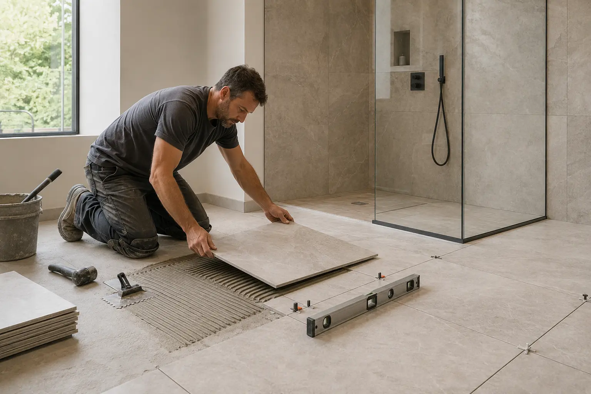

TESSERA TILE
BATHROOM & SHOWER TILE
Precise tile. Calm, beautiful rooms.
Bathroom tile planned around the layout, waterproofing, pattern and finish, from substrate through final grout.
Large-format tileShower systemsCustom niches

Bathroom tile planned around the layout, waterproofing, pattern and finish, from substrate through final grout.